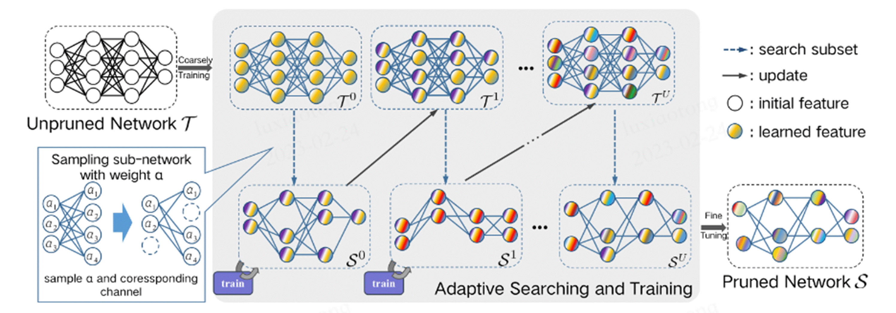
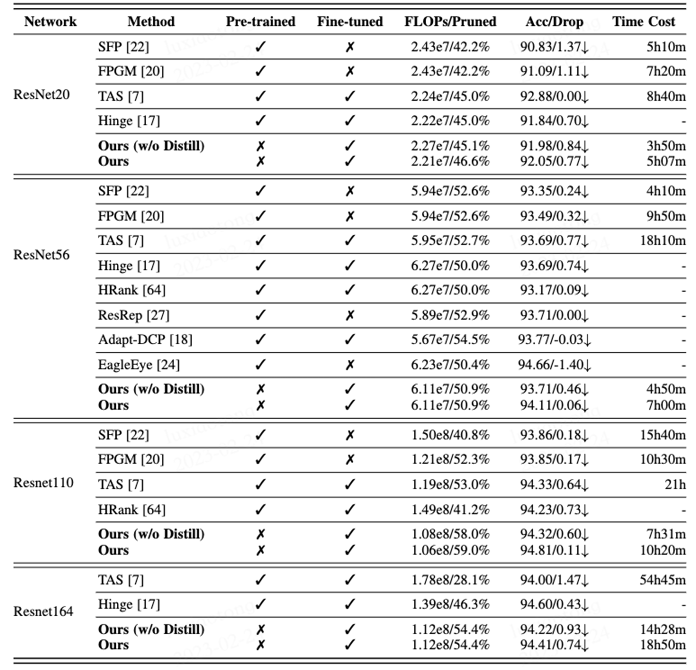
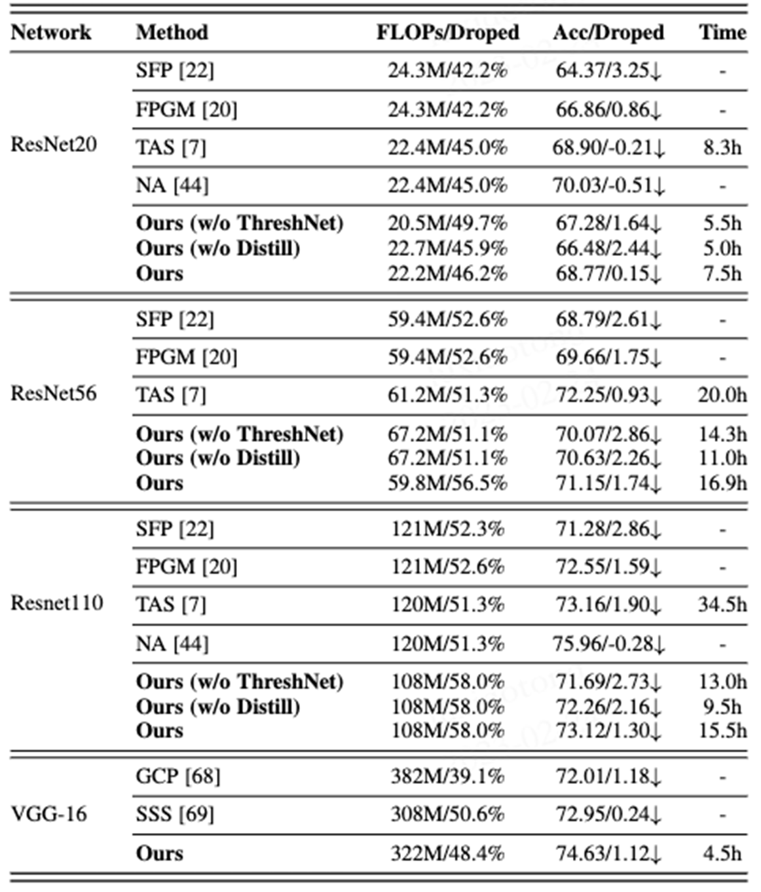
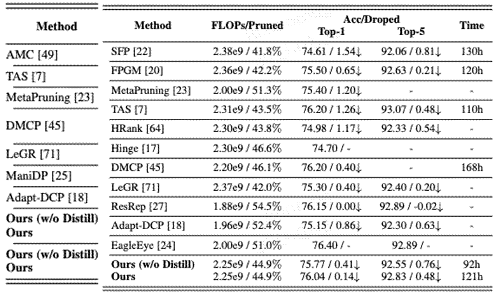

Xiaotong Lu1 Weisheng Dong1* Xin
Li2 Jinjian
Wu1 Leida Li1 Guangming Shi1
1School of
Artificial Intelligence, Xidian University 2
West Virginia University, Morgantown WV, USA

Fig. 1: Detailed illustration of the adaptive
search-and-training method. First, we sample compact subnets of the target
network based on weight α. Second, we search, train, and map the subnets to the
target network. Note that such a search-train-map process will be iterated
until the sampled subnets converge. The best performing subnetwork is finally
fine-tuned into the output pruned network.
Abstract
Both network pruning and neural
architecture search (NAS) can be interpreted as techniques to automate the
design and optimization of artificial neural networks. In this paper, we
challenge the conventional wisdom of training before pruning by proposing a joint
search-and-training approach to learn a compact network directly from scratch.
Using pruning as a search strategy, we advocate three new insights for network
engineering: 1) to formulate adaptive search as a cold start strategy to find a
compact subnetwork on the coarse scale; and 2) to automatically learn the
threshold for network pruning; 3) to offer flexibility to choose between
efficiency and robustness. More specifically, we propose an adaptive search
algorithm in the cold start by exploiting the randomness and flexibility of filter
pruning. The weights associated with the network filters will be updated by ThreshNet, a flexible coarse-to-fine pruning method inspired
by reinforcement learning. In addition, we introduce a robust pruning strategy
leveraging the technique of knowledge distillation through a teacher-student
network. Extensive experiments on ResNet and VGGNet have shown that our proposed method can achieve a
better balance in terms of efficiency and accuracy and notable advantages over
current state-of-the-art pruning methods in several popular datasets, including
CIFAR10, CIFAR100, and ImageNet.
Citation
[1] Lu X,
Dong W, Li X, et al. Adaptive Search-and-Training for Robust and Efficient
Network Pruning[J]. IEEE Transactions on Pattern Analysis and Machine
Intelligence, 2023.
Bibtex
@article{lu2023adaptive, title={Adaptive Search-and-Training for Robust and Efficient Network Pruning}, author={Lu, Xiaotong and Dong, Weisheng and Li, Xin and Wu, Jinjian and Li, Leida and Shi, Guangming}, journal={IEEE Transactions on Pattern Analysis and Machine Intelligence}, year={2023}, publisher={IEEE} }
Download
Results
Table 1. Comparison of different pruning algorithms for ResNet on CIFAR10. ’FLOPS / pruned’ means the calculation
and pruning rate. ’Acc / drop’ means accuracy and performance drop. The “3” and
“7” under ”Pre-trained” and ”Fine-tuned” indicate
whether the corresponding method needs to be pretrained before pruning or
optimized afterward, respectively. Note that the data of SFP and FPGM are from
the training log published by the authors, and the data of TAS are from the open source code of the author.

Table 2. Comparison of different pruning algorithms for ResNet on CIFAR-100. The parameters in the above table are
consistent with
Table2, where “Ours (w/o ThreshNet)” means pruning
with a fixed pruning rate for each layer in the network.

Table 3. Comparison of different pruning algorithms of ResNet50
& MobileNet V2 on ImageNet.

Contact
Xiaotong Lu, Email:
xiaotonglu47@gmail.com
Weisheng Dong, Email:
wsdong@mail.xidian.edu.cn
Xin Li, Email:
xin.li@mail.wvu.edu
Leida Li, Email: ldli@xidian.edu.cn
Jinjian Wu, Email:
jinjian.wu@mail.xidian.edu.cn
Guangming Shi, Email:
gmshi@xidian.edu.cn